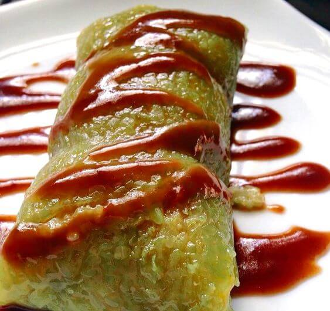
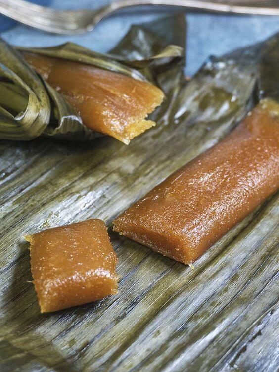
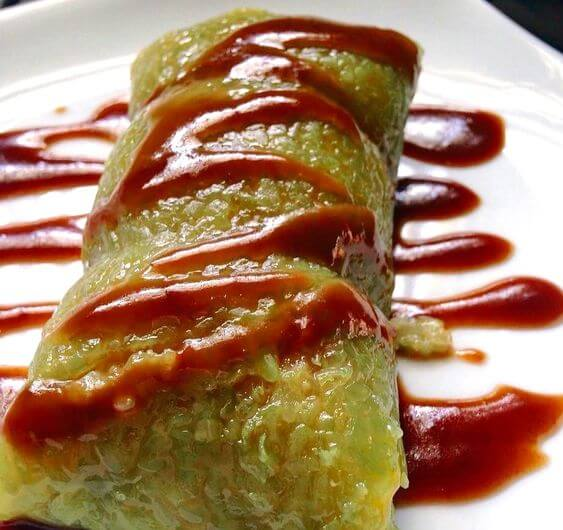
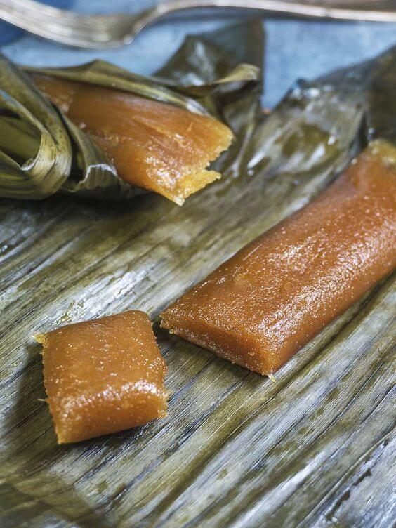

Ang suman ay isa sa mga sikat at masarap na pagkain sa Pilipinas. Ito ay isang uri ng kakaning gawa sa
malagkit na bigas na binabalot sa dahon ng saging at niluluto hanggang sa maging malambot at malutong. Ang
suman ay karaniwang inihahanda bilang pampagana o meryenda at maaaring kainin kasama ng mainit na tsokolate o
iba pang paboritong inumin.
Ang kasaysayan ng suman ay malalim at nagmula sa mga sinaunang panahon. Ang paggamit ng malagkit na bigas at
dahon ng saging bilang pangunahing sangkap ng suman ay nagpapahiwatig ng pagiging katutubo at malalim na
kultura ng Pilipinas. Ang mga katutubong Pilipino ay natutuhan ang pagluluto ng suman at ito ay nagpatuloy
bilang tradisyon sa buong bansa.
Ang paraan ng pagluluto ng suman ay simpleng ngunit labor-intensive. Ang malagkit na bigas ay binababad sa
tubig upang maging malambot. Matapos ito, ang mga ito ay hinahaluan ng asukal, gata ng niyog, at iba pang
pampalasa tulad ng langka, ube, o keso para sa iba't ibang lasa. Ang mga sangkap na ito ay malinamnam at
nagbibigay ng kakaibang sarap sa suman.
Pagkatapos ihanda ang malagkit na bigas, ito ay inilalagay sa mga dahon ng saging at ibinabalot nang maingat.
Ang paggamit ng dahon ng saging bilang balot ay nagbibigay ng natatanging lasa at amoy sa suman habang ito ay
niluluto. Ang mga balot na suman ay niluluto sa malamig na tubig hanggang sa lumambot ang bigas at maabot ang
tamang konsistensiya.
Ang suman ay maaaring kainin nang buo o hiniwa-hiwa. Ito ay karaniwang inilalako sa mga palengke, pampublikong
lugar, at mga maliliit na tindahan. Sa tuwing may okasyon tulad ng mga piyesta, kasal, o binyag, ang suman ay
isa sa mga hindi mawawala sa handaan at handog ng mga Pilipino.
Ang suman ay hindi lamang isang simpleng pagkain, ito rin ay naglalarawan ng kulturang Pilipino. Ito ay isang
patunay ng kasipagan at kasanayan ng mga Pilipino sa paghahanda ng pagkain. Ang pagkain ng suman ay isang
pagpapahalaga sa ating tradisyon, pinagmulan, at mga lokal na sangkap na ginagamit sa ating kusina.
Sa huling salita, ang suman ay hindi lang isang kakanin, ito ay isang alaala ng ating kultura at kasaysayan.
Ito ay nagbibigay ng kasiyahan sa bawat kagat at nagpapalakas ng ating pagkakakilanlan bilang mga Pilipino.
Suman: Ang Matamis at Malagkit na Kakanin ng Pilipinas
 


